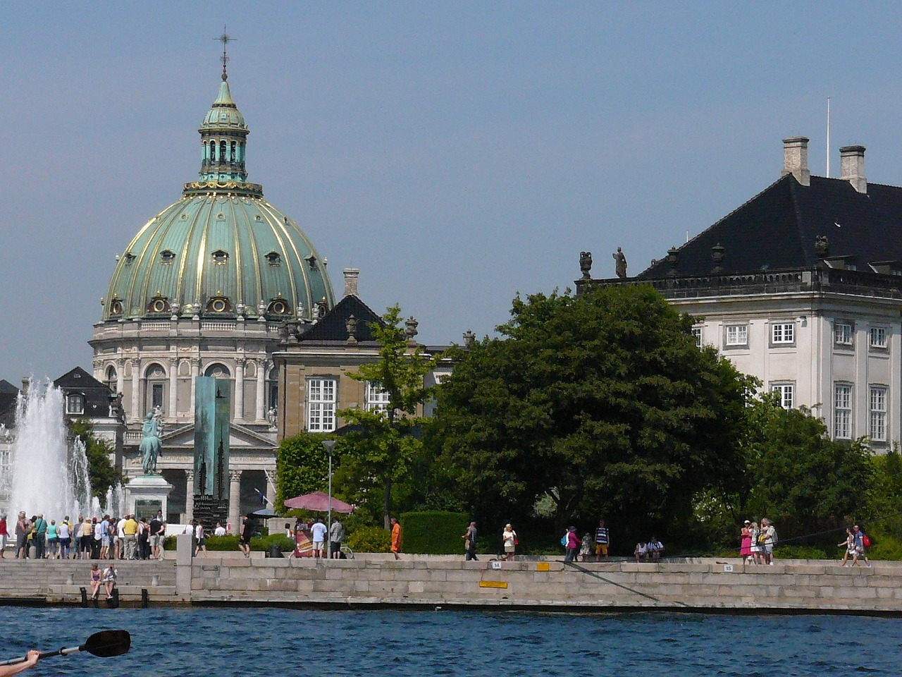
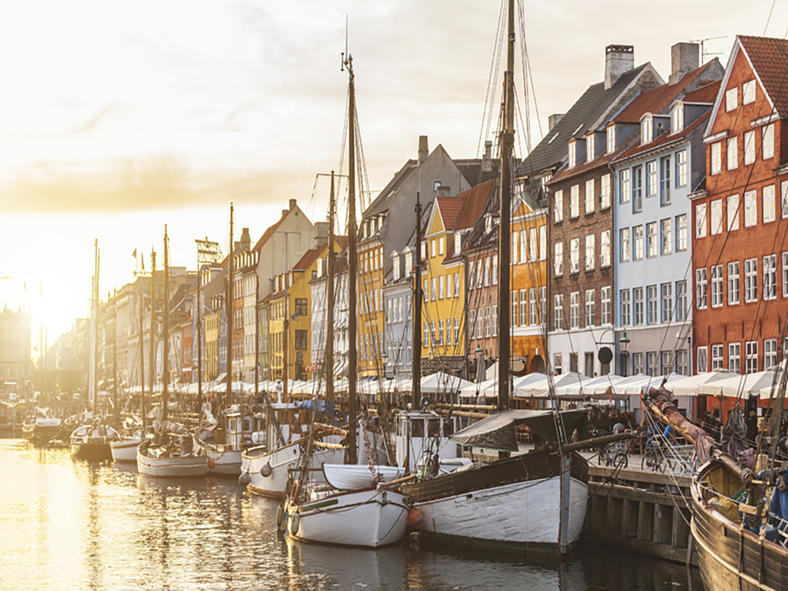
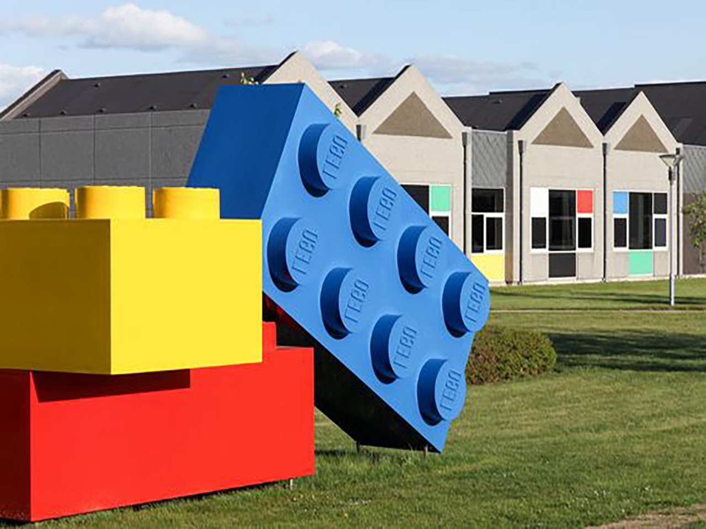
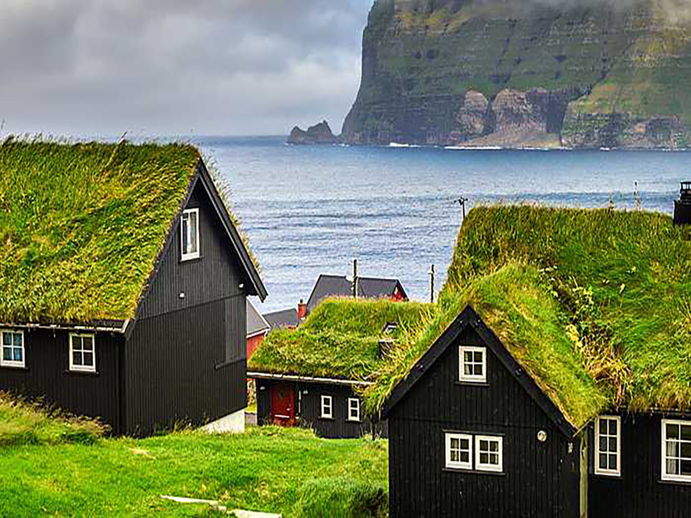

<!DOCTYPE html>
<html lang="en">
<head>
    <meta charset="UTF-8">
    <meta name="viewport" content="width=device-width, initial-scale=1.0">
    <meta http-equiv="X-UA-Compatible" content="ie=edge">
    <link href="https://fonts.googleapis.com/css?family=Heebo:400,700&display=swap" rel="stylesheet">
    <link rel="stylesheet" href="css/styles.css">
    <title>Document</title>
</head>
<body>
  <header>
    <div class="menu">
      <div class="logo"></div>
      <div class="center-txt">
        <span></span><p>A la redecouverte ...</p>
      </div>
      <div class="pictos">
          <div></div>
          <div></div>
      </div>
    </div>
  </header>
  <div class="gradient">
    <div><span></span><p>Guide de voyage / France / Biarritz</p></div>
    <div></div>
    <div><p>Partager</p></div>
  </div>
  <div class="overlay">
    <div class="block">
    <div class="block-title"><h1>copenhague</h1>
      <p>Pleine vue sur la ville<br> haut en couleur </p>
    </div>
    <div class="icone">

      <div>
        
        <p>Euro</p>
      </div>

      <div>
        
        <p>13:26</p>
      </div>

      <div>
        
        <p>français</p>
      </div>

      <div>
        
        <p>3h30</p>
      </div>

    </div>
    <div class="arrow"></div>
  </div>
  </div>

<section class="content-form">
<div class="formulaire">
  <h2>REMPORTE UN VOYAGE <br>TOUT CONPRIS D’UNE SEMAINE :) </h2>
  <p>Parce que partir en vacances sur un coup de tete n’est pas forcement aisé pour les <br>petites bourses, Travel by Air France fait gagner aux 22 - 25 ans une semaines de <br>vacances gratuite, avec transports (selon les besoins : avions, taxi, trains), hotel, <br>restauration et acivités.
  <br><br><span>   </span>conditions de participation : Avoir entre 22 et 35 ans, et etre de nationalité française. Une pièce d’itentité sera demandé au moment de réserver vos billets et logements.</p>
<input type="text" class="input-form" name="name" placeholder="Prénom" required minlength="4" maxlength="8" size="10">
<input type="text" class="input-form" name="name" placeholder="Nom" required minlength="4" maxlength="8" size="10">
<input type="text" class="input-form" name="name" placeholder="Age" required minlength="4" maxlength="8" size="10">
<input type="text" class="input-form" name="name" placeholder="Votre adressse mail" required minlength="4" maxlength="8" size="10">
<div class="boutton-form">Tentez ma chance <span>  </span></div>
</div>
  </section>

  <div class="programme"><h1><strong>AU PROGRAMME...</strong></h1><p>le pays avec lequel il partage une frontière terrestre. Sa capitale est Copenhague., la station <br>balnéaire impériale s’ouvre sur l’océan et ses vents marins, melant douceur de vivre incomparable<br> et multiples activités.</p></div>
  <div class="fond">
<div class="yellow">
<div class="transport rubrique-text">
  <span></span>
  <div>
    <h1>Transport</h1>
    <p>Direstion  Copenhague avec Air </p>
  </div>
</div>

<div class="transfert rubrique-text">
  <span></span>
  <div>
    <h1>Transfert</h1>
    <p>Bougez avec DRIVE comme une star vers l’aéroport de Copenhage</p>
  </div>
</div>

<div class="hebergement rubrique-text">
  <span></span>
  <div>
    <h1>Hébergement</h1>
    <p>Vivez avec AIRBNB! au coeur de Copenhague à la jetée.</p>
  </div>
</div>
</div>

<section>

  <div class="fond-black">
    <div class="content-bio">
      <div><div class="profil"></div><p class="name-bio">Marine & Elliot <br>en mai 2019 </p></div>
      <div class="activity"><h1>« Merci Travel <br>by air france ! »</h1>
        <p>Ce séjour à Copenhague était génial La cote Danoise regorge de beaux endroits et de belles découvertes culinaires.</p>
<br>
<p>Day 1:  Commencez par visiter Copenhague à vélo, le moyen de transport favori de près de 55 % de Danois, dont le Premier Ministre! Avec plus de 200km de pistes cyclables, la ville est facile à parcourir. Procurez-vous une carte de la ville et empruntez un des vélos mis gracieusement à disposition .</p>
<br>
Day 2:  Après avoir fait le tour de la capitale danoise à vélo, rendez-vous au port de Copenhague pour admirer la principale attraction touristique de la capitale: la statue de la Petite Sirène, sculptée par Edvard Eriksen en 1913.</p>
<br>
<p>Day 4:  Saviez-vous que cette statue avait été commandée par Carl Jacobsen, le fils du fondateur des brasseries Carlsberg? Présent dans plus de 140 pays, Carlsberg est aussi le 4ème brasseur mondial. Profitez de votre passage dans la capitale pour visiter la fameuse brasserie!</p>
<br>
<p>Day 6:  Vous avez gardé votre âme d’enfant? Alors dans ce cas, direction le parc de Tivoli, à Copenhague toujours! Ouvert depuis 1843.</p>
</p></div>

      <div class="polaroid">
        <div class="block1"></div>
        <div class="block2"></div>
        <div class="block3"></div>
      </div>
</div>
  </div>
</section>


<section>

<div class="fond-blanc decord">
  <div class="theweknow">

    <h1>le saviez vous ?</h1>

    <div class="presentation"> <div class="photo-present1"></div> <div class="text-rub"><h2>Découvrez,  le parc de Tivoli</h2><p>
situé également au Danemark). Entre attractions diverses et restaurations variées, vous passerez à coup sûr une journée délicieuse dans ce parc
très chaleureux.
</p></div> </div>
    <div class="presentation"> <div class="photo-present2"></div> <div class="text-rub"><h2>Les "Wienerbrød", pâtisserie de Copenhague</h2><p>
Les "hallmarks" sont des gâteaux en pâte feuilletée avec du glaçage et garni de crème.
Les "viktigaste" sont reconnaissables à leur forme en escargot et décorés de spirales. Les "viktigaste" à la canelle sont généralement surmonté d'un glaçage blanc. graines de pavot. Les petits "frøsnapper
</p></div> </div>
  </div>
</div>

</section>


<section>

<div class="fond-orange">
<div class="content-card">
  <h1>Nos adresses à Copenhague</h1>
  <div class="link-adresse">
    <ul>
      <li>Tout voir</li>
      <li>A la une</li>
      <li>Sorties & Restaurant</li>
      <li>Hebergements</li>
      <li>Visites et activités</li>
    </ul>
  </div>
  <div>  </div>

  <div class="card-slide">
      <div class="card-destination"><figure class="photo-card"></figure><figcaption><span class="pictocard">pictos</span><div class="text-card"><p class="description-card">Séjour à Marmorkirken est une église située vers Frederiksstaden</p><p>Charme - Boutique - Hotel </p></div></figcaption></div>
      <div class="card-destination"><figure class="photo-card"></figure><figcaption><span class="pictocard">pictos</span><div class="text-card"><p class="description-card">Séjour à Marmorkirken est une église située vers Frederiksstaden</p><p>Charme - Boutique - Hotel </p></div></figcaption></div>
      <div class="card-destination"><figure class="photo-card"></figure><figcaption><span class="pictocard">pictos</span><div class="text-card"><p class="description-card">Séjour à Marmorkirken est une église située vers Frederiksstaden</p><p>Charme - Boutique - Hotel </p></div></figcaption></div>
      <div class="card-destination"><figure class="photo-card"></figure><figcaption><span class="pictocard">pictos</span><div class="text-card"><p class="description-card">Séjour à Marmorkirken est une église située vers Frederiksstaden</p><p>Charme - Boutique - Hotel </p></div></figcaption></div>
      <div class="card-destination"><figure class="photo-card"></figure><figcaption><span class="pictocard">pictos</span><div class="text-card"><p class="description-card">Séjour à Marmorkirken est une église située vers Frederiksstaden</p><p>Charme - Boutique - Hotel </p></div></figcaption></div>
      <div class="card-destination"><figure class="photo-card"></figure><figcaption><span class="pictocard">pictos</span><div class="text-card"><p class="description-card">Séjour à Marmorkirken est une église située vers Frederiksstaden</p><p>Charme - Boutique - Hotel </p></div></figcaption></div>
  </div>
<iframe class="maps-size" src="https://www.google.com/maps/embed?pb=!1m18!1m12!1m3!1d72000.64910977846!2d12.523784483564063!3d55.67124741350774!2m3!1f0!2f0!3f0!3m2!1i1024!2i768!4f13.1!3m3!1m2!1s0x4652533c5c803d23%3A0x4dd7edde69467b8!2sCopenhague%2C%20Danemark!5e0!3m2!1sfr!2sfr!4v1574372627078!5m2!1sfr!2sfr" width="835" height="300" frameborder="0" style="border:0;" allowfullscreen=""></iframe>
</div>

</div>

</section>

<section>
  <div class="fond-blanc">
    <div class="content-infos">
      <h1>Les infos pratiques</h1>
        <div class="infos-lien">

        <div>
          <div class="lien">Informations santé <span> </span></div>
          <div class="lien">Climat et météo <span> </span></div>
          <div class="lien">Aéroport de Copenhage Pays basque <span> </span></div>
        </div>

        <div>
        <div class="lien">Informations santé <span> </span></div>
        <div class="lien">Climat et météo <span> </span></div>
        <div class="lien">Aéroport de Copenhage Pays basque <span></span></div>
        </div>

        <div>
          <div class="lien">Informations santé <span> </span></div>
          <div class="lien">Climat et météo <span> </span></div>
          <div class="lien">Aéroport de Copenhage Pays basque <span> </span></div>
        </div>

        </div>
      </div>
    </div>
</section>

<section>
<div class="fond-blanc2">
  <div class="content-bonus">
    <h1>Ces destinations devraient vous tenter</h1>

<div class="block-destinations">
    <div class="corse block-travel"><h2>corse</h2></div>
    <div class="nice block-travel"><h2>nice</h2></div>
    <div class="palma block-travel"><h2>palma de majorque</h2></div>
    <div class="ibizas block-travel"><h2>ibiza</h2></div>
</div>

<div class="bas"><p>Liste des destinations | Informations légles | Gestion des cookies  | Crédit photos</p></div>
  </div>
</div>
</section>


</body>
</html>
